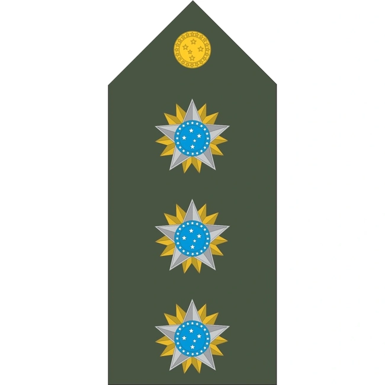

Postos do Exercito Brasileiro
No Exercito Brasileiro existe uma forma de separar cade militar pela hierarquia, assim podendo identificar os militares pelo seu posto e graduação, isso demontra respeito e
mostrar que realmente o militar esta disposto a crescer no militarismo.
Essa hierarquiae dividida entre:
Postos de Oficiais
Oficiais Generais:
Marechal
È a patente mais alta no Exército, concedida apenas em tempos de guerra e reservada para um oficial-general com um histórico de serviço militar notável. General de Exército
E o posto mais alto da hierarquia militar bo Brasil, que e responsavel pelas decisões de alto nível.
General de Divisão
E um posto intermediario no exército, ele e necessario para comandar uma divisão do exército.
General de Brigada
E um posto de oficial general nas Forças Armadas, que na hierarquiae posicionado entre coronel e gerneral de divisão.
Oficiais Superiores:
-
Coronel
É responsável por funções de Estado-Maior, planejamento e condução de ações organizacionais do exército.

Tenente-Coronel
Ele comanda uma unidade de tropa, como um batalhão ou regimento de cavalaria. Major
E responsável por comandar unidades, liderar tropas, supervisionar treinamentos e tomar decisões táticas.
Oficial intermediario
Capitão
Ele comanda a companhia/Tropa de soldados. ELe tambem e responsavel por treinar e cuidar da administração da companhia.
Oficiais Subalternos
1° Tenente
Ele comanda um pelotão de soldados na faixa de entre 30 a 50 soldados, sendo responsavel por liderar e treinar seus subordinados em missões.2° Tenente
Ele que lidera pequenas unidades, como um pelotão, supervisiona soldados e executa tarefas administrativas e operacionais. Ele também participa de patrulhas, operações de treinamento e outras atividades de segurança e defesa. 
Aspirantes
Eles atuam como a espinha dorsal do comando, garantindo que as ordens sejam executadas com precisão e que as unidades estejam prontas para enfrentar qualquer desafio.